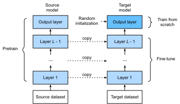

14.2. 微调¶
在前面的章节中，我们讨论了如何在只有 60000 张图像的 Fashion-MNIST 训练数据集上训练模型。我们还介绍了 ImageNet，这是学术界最广泛使用的大规模图像数据集，包含超过 1000 万张图像和 1000 个物体。然而，我们通常遇到的数据集规模介于这两个数据集之间。
假设我们想从图像中识别不同类型的椅子，然后向用户推荐购买链接。 一种可能的方法是先识别 100 种常见椅子， 为每种椅子拍摄 1000 张不同角度的图像， 然后在收集到的图像数据集上训练一个分类模型。 尽管这个椅子数据集可能比 Fashion-MNIST 数据集大， 但其样例数量仍然不到 ImageNet 中样例数量的十分之一。 这可能导致适合 ImageNet 的复杂模型 在这个椅子数据集上过拟合。 此外，由于训练样例数量有限， 训练得到的模型的准确率 可能无法满足实际需求。
为了解决上述问题， 一个明显的解决办法是收集更多数据。 然而，收集和标注数据可能耗费大量时间和金钱。 例如，为了收集 ImageNet 数据集，研究人员从研究经费中花费了数百万美元。 尽管如今的数据收集成本已显著降低，但这一成本仍然不可忽视。
另一种解决办法是应用迁移学习（transfer learning），把从源数据集（source dataset）学到的知识迁移到目标数据集（target dataset）。 例如，尽管 ImageNet 数据集中的大多数图像与椅子无关，但在该数据集上训练的模型可以提取出更通用的图像特征，这些特征有助于识别边缘、纹理、形状和物体组成。 这些相似的特征可能 对识别椅子也同样有效。
14.2.1. 步骤¶
本节我们将介绍迁移学习中的一种常用技术：微调（fine-tuning）。如 图14.2.1 所示，微调由以下四个步骤组成：
在源数据集（例如 ImageNet 数据集）上预训练一个神经网络模型，即源模型。
创建一个新的神经网络模型，即目标模型。它复制了源模型上除输出层外的所有模型设计及其参数。我们假设这些模型参数包含从源数据集学到的知识，并且这些知识同样适用于目标数据集。我们还假设源模型的输出层与源数据集的标签密切相关；因此它不会用于目标模型。
给目标模型添加一个输出层，其输出数量为目标数据集中的类别数。然后随机初始化该层的模型参数。
在目标数据集（例如椅子数据集）上训练目标模型。输出层将从头开始训练，而所有其他层的参数则基于源模型的参数进行微调。

图14.2.1 微调。¶
当目标数据集远小于源数据集时，微调有助于提高模型的泛化能力。
14.2.2. 热狗识别¶
让我们通过一个具体案例演示微调： 热狗识别。 我们将在一个小型数据集上微调一个 ResNet 模型， 该模型已在 ImageNet 数据集上预训练。 这个小数据集由 数千张包含热狗和不包含热狗的 图像组成。 我们将使用微调后的模型从图像中 识别热狗。
%matplotlib inline
import os
import torch
import torchvision
from torch import nn
from d2l import torch as d2l
%matplotlib inline
import os
from mxnet import gluon, init, np, npx
from mxnet.gluon import nn
from d2l import mxnet as d2l
npx.set_np()
14.2.2.1. 读取数据集¶
我们使用的热狗数据集取自在线图像。 该数据集由 1400 张包含热狗的正类图像， 以及同样多的包含其他食物的负类图像组成。 两类各取 1000 张图像用于训练，其余用于测试。
解压下载的数据集后， 我们得到两个文件夹 hotdog/train 和
hotdog/test。这两个文件夹都有 hotdog 和 not-hotdog
子文件夹，每个子文件夹包含对应类别的图像。
#@save
d2l.DATA_HUB['hotdog'] = (d2l.DATA_URL + 'hotdog.zip',
'fba480ffa8aa7e0febbb511d181409f899b9baa5')
data_dir = d2l.download_extract('hotdog')
#@save
d2l.DATA_HUB['hotdog'] = (d2l.DATA_URL + 'hotdog.zip',
'fba480ffa8aa7e0febbb511d181409f899b9baa5')
data_dir = d2l.download_extract('hotdog')
我们创建两个实例，分别读取训练数据集和测试数据集中的所有图像文件。
train_imgs = torchvision.datasets.ImageFolder(os.path.join(data_dir, 'train'))
test_imgs = torchvision.datasets.ImageFolder(os.path.join(data_dir, 'test'))
train_imgs = gluon.data.vision.ImageFolderDataset(
os.path.join(data_dir, 'train'))
test_imgs = gluon.data.vision.ImageFolderDataset(
os.path.join(data_dir, 'test'))
下面展示了前 8 个正类样例和后 8 个负类图像。正如你所看到的，这些图像的大小和宽高比各不相同。
hotdogs = [train_imgs[i][0] for i in range(8)]
not_hotdogs = [train_imgs[-i - 1][0] for i in range(8)]
d2l.show_images(hotdogs + not_hotdogs, 2, 8, scale=1.4);
hotdogs = [train_imgs[i][0] for i in range(8)]
not_hotdogs = [train_imgs[-i - 1][0] for i in range(8)]
d2l.show_images(hotdogs + not_hotdogs, 2, 8, scale=1.4);
在训练期间，我们首先从图像中裁剪出一个随机大小、随机宽高比的区域， 然后把这个区域 缩放到 \(224 \times 224\) 的输入图像。 在测试期间，我们把图像的高度和宽度都缩放到 256 像素，然后裁剪出中心的 \(224 \times 224\) 区域作为输入。 此外， 对于 RGB（红、绿、蓝）三个颜色通道， 我们逐通道地对其取值进行标准化。 具体来说， 先从该通道的每个取值中减去该通道的均值，再把结果除以该通道的标准差。
# Specify the means and standard deviations of the three RGB channels to
# standardize each channel
normalize = torchvision.transforms.Normalize(
[0.485, 0.456, 0.406], [0.229, 0.224, 0.225])
train_augs = torchvision.transforms.Compose([
torchvision.transforms.RandomResizedCrop(224),
torchvision.transforms.RandomHorizontalFlip(),
torchvision.transforms.ToTensor(),
normalize])
test_augs = torchvision.transforms.Compose([
torchvision.transforms.Resize([256, 256]),
torchvision.transforms.CenterCrop(224),
torchvision.transforms.ToTensor(),
normalize])
# Specify the means and standard deviations of the three RGB channels to
# standardize each channel
normalize = gluon.data.vision.transforms.Normalize(
[0.485, 0.456, 0.406], [0.229, 0.224, 0.225])
train_augs = gluon.data.vision.transforms.Compose([
gluon.data.vision.transforms.RandomResizedCrop(224),
gluon.data.vision.transforms.RandomFlipLeftRight(),
gluon.data.vision.transforms.ToTensor(),
normalize])
test_augs = gluon.data.vision.transforms.Compose([
gluon.data.vision.transforms.Resize(256),
gluon.data.vision.transforms.CenterCrop(224),
gluon.data.vision.transforms.ToTensor(),
normalize])
14.2.2.2. 定义和初始化模型¶
我们使用在 ImageNet 数据集上预训练的 ResNet-18 作为源模型。这里我们指定
pretrained=True，以便自动下载预训练的模型参数。
如果是第一次使用该模型， 下载时需要连接互联网。
pretrained_net = torchvision.models.resnet18(pretrained=True)
预训练的源模型实例包含若干特征层以及一个输出层 fc。
这样划分的主要目的是便于微调除输出层外所有层的模型参数。源模型的成员变量
fc 如下所示。
pretrained_net.fc
pretrained_net = gluon.model_zoo.vision.resnet18_v2(pretrained=True)
预训练的源模型实例包含两个成员变量：features 和
output。前者包含模型中除输出层外的所有层，后者是模型的输出层。
这样划分的主要目的是便于微调除输出层外所有层的模型参数。源模型的成员变量
output 如下所示。
pretrained_net.output
作为一个全连接层，它把 ResNet 最后的全局平均汇聚输出变换为 ImageNet 数据集的 1000 类输出。 然后我们构造一个新的神经网络作为目标模型。它的定义方式与预训练的源模型相同，只是把最后一层的输出数量 设置为 目标数据集中的类别数（而不是 1000）。
在下面的代码中，目标模型实例 finetune_net
输出层之前的模型参数被初始化为源模型中对应层的模型参数。
由于这些模型参数是通过在 ImageNet 上预训练得到的， 它们是有效的。
因此，我们只能使用 较小的学习率来微调这些预训练参数。
相比之下，输出层中的模型参数是随机初始化的，通常需要较大的学习率才能从头开始学习。
设基础学习率为 \(\eta\)，则输出层中的模型参数将使用 \(10\eta\)
的学习率进行迭代。
finetune_net = torchvision.models.resnet18(pretrained=True)
finetune_net.fc = nn.Linear(finetune_net.fc.in_features, 2)
nn.init.xavier_uniform_(finetune_net.fc.weight);
finetune_net = gluon.model_zoo.vision.resnet18_v2(classes=2)
finetune_net.features = pretrained_net.features
finetune_net.output.initialize(init.Xavier())
# The model parameters in the output layer will be iterated using a learning
# rate ten times greater
finetune_net.output.collect_params().setattr('lr_mult', 10)
14.2.2.3. 微调模型¶
首先，我们定义一个使用微调的训练函数
train_fine_tuning，以便可以多次调用它。
# If `param_group=True`, the model parameters in the output layer will be
# updated using a learning rate ten times greater
def train_fine_tuning(net, learning_rate, batch_size=128, num_epochs=5,
param_group=True):
train_iter = torch.utils.data.DataLoader(torchvision.datasets.ImageFolder(
os.path.join(data_dir, 'train'), transform=train_augs),
batch_size=batch_size, shuffle=True)
test_iter = torch.utils.data.DataLoader(torchvision.datasets.ImageFolder(
os.path.join(data_dir, 'test'), transform=test_augs),
batch_size=batch_size)
devices = d2l.try_all_gpus()
loss = nn.CrossEntropyLoss(reduction="none")
if param_group:
params_1x = [param for name, param in net.named_parameters()
if name not in ["fc.weight", "fc.bias"]]
trainer = torch.optim.SGD([{'params': params_1x},
{'params': net.fc.parameters(),
'lr': learning_rate * 10}],
lr=learning_rate, weight_decay=0.001)
else:
trainer = torch.optim.SGD(net.parameters(), lr=learning_rate,
weight_decay=0.001)
d2l.train_ch13(net, train_iter, test_iter, loss, trainer, num_epochs,
devices)
def train_fine_tuning(net, learning_rate, batch_size=128, num_epochs=5):
train_iter = gluon.data.DataLoader(
train_imgs.transform_first(train_augs), batch_size, shuffle=True)
test_iter = gluon.data.DataLoader(
test_imgs.transform_first(test_augs), batch_size)
devices = d2l.try_all_gpus()
net.collect_params().reset_ctx(devices)
net.hybridize()
loss = gluon.loss.SoftmaxCrossEntropyLoss()
trainer = gluon.Trainer(net.collect_params(), 'sgd', {
'learning_rate': learning_rate, 'wd': 0.001})
d2l.train_ch13(net, train_iter, test_iter, loss, trainer, num_epochs,
devices)
我们把基础学习率设置为一个较小的值， 以便微调通过预训练得到的模型参数。基于前面的设置，我们将使用十倍大的学习率从头开始训练目标模型的输出层参数。
train_fine_tuning(finetune_net, 5e-5)
train_fine_tuning(finetune_net, 0.01)
为了进行比较，我们定义一个完全相同的模型，但把它的所有模型参数初始化为随机值。由于整个模型需要从头开始训练，我们可以使用更大的学习率。
scratch_net = torchvision.models.resnet18()
scratch_net.fc = nn.Linear(scratch_net.fc.in_features, 2)
train_fine_tuning(scratch_net, 5e-4, param_group=False)
scratch_net = gluon.model_zoo.vision.resnet18_v2(classes=2)
scratch_net.initialize(init=init.Xavier())
train_fine_tuning(scratch_net, 0.1)
正如我们所看到的，在相同的轮数下，微调后的模型往往表现更好， 因为它的初始参数值更有效。
14.2.3. 小结¶
迁移学习把从源数据集学到的知识迁移到目标数据集。微调是迁移学习的一种常用技术。
目标模型复制源模型除输出层外的所有模型设计及其参数，并基于目标数据集对这些参数进行微调。相比之下，目标模型的输出层需要从头开始训练。
一般来说，微调参数使用较小的学习率，而从头开始训练输出层可以使用较大的学习率。
14.2.4. 练习¶
不断提高
finetune_net的学习率。模型的准确率如何变化？进一步调整对比实验中
finetune_net和scratch_net的超参数。它们在准确率上还有差异吗？把
finetune_net输出层之前的参数设置为源模型的参数，并在训练期间不更新它们。模型的准确率如何变化？你可以使用下面的代码。
for param in finetune_net.parameters():
param.requires_grad = False
finetune_net.features.collect_params().setattr('grad_req', 'null')
事实上，
ImageNet数据集中有一个“热狗”类。它在输出层中对应的权重参数可以通过下面的代码获得。我们可以如何利用这个权重参数？